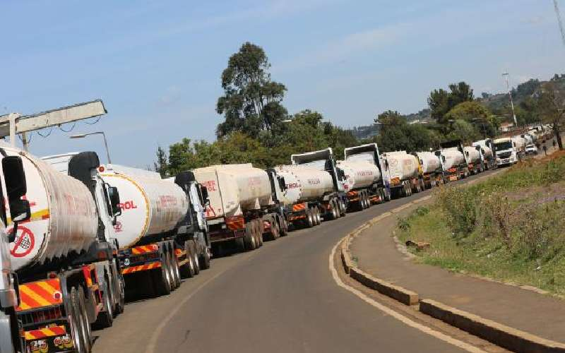

This model attempts to address the amount of losses that is faced by the Kenya's Oil and Gas industry during transportation and distribution of products, by analysing the infrastructure used such as Pipelines, Storage Tanks and Transport Vehicles.

This project demonstrates the application of deep learning techniques to build a robust facial expression classifier using the popular Keras library with the Rectified Linear Unit (ReLU) activation function. The goal of this project is to accurately predict whether a person's facial expression is "happy" or "sad" based on input images.
This project uses LSTM models to forecast time series data, initially focusing on temperature and later including pressure. This project demonstrates my advanced data analysis skills, multivariate forecasting expertise, and adaptability in handling evolving project requirements.
This project leverages a powerful combination of NLTK, the VADER sentiment scorer, and the RoBERTa model to conduct sentiment analysis on Amazon customer reviews. It extracts actionable insights from diverse product categories, unveiling customer sentiments as positive, negative, or neutral.
Exploration of Customer data using SQLiteStudio, including multiple tables in the dataset.
This project utilises Naive Bayes Algorithm to predict whether our clients are likely to recommend our products or not.